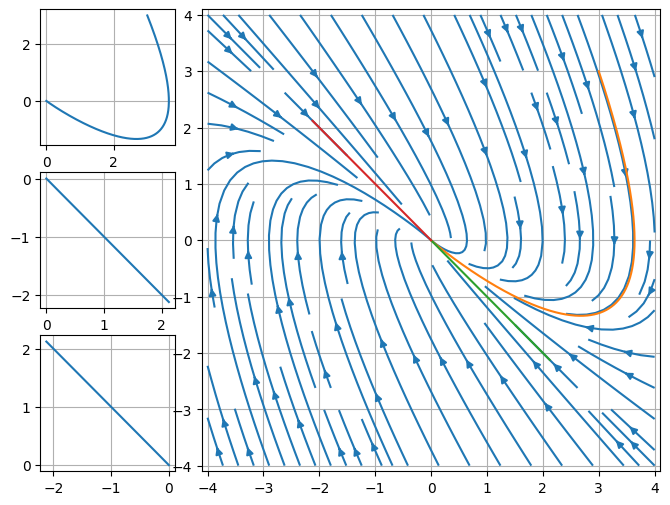
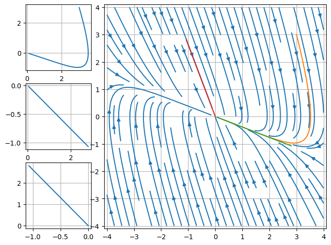

控制论
Contents
控制论#
实数域的微分方程#
import sympy as sp
from sympy.abc import t
f = sp.Function('f')(t)
A, B = sp.symbols('A B')
equ0 = sp.Eq(sp.Derivative(f, t, 2), A * f + B * sp.Derivative(f, t, 1))
display(equ0)
result0 = sp.dsolve(equ0, f)
display(result0)
M, N = sp.symbols('M N')
f1 = result0.rhs.args[0].args[1].args[0].coeff(t) # type:ignore
f2 = result0.rhs.args[1].args[1].args[0].coeff(t) # type:ignore
equ1 = sp.Eq(f1, M)
equ2 = sp.Eq(f2, N)
display(equ1)
display(equ2)
solution=sp.solve((equ1, equ2), (A, B))
equ3 = sp.Eq(A, solution[0][0])
equ4 = sp.Eq(B, solution[0][1])
display(equ3)
display(equ4)
equ5 = sp.Eq(sp.Derivative(f, t, 2), (solution[0][0]) * f + (solution[0][1]) * sp.Derivative(f, t, 1))
display(equ5)
result5 = sp.dsolve(equ5, f)
display(result5)
\[\displaystyle \frac{d^{2}}{d t^{2}} f{\left(t \right)} = A f{\left(t \right)} + B \frac{d}{d t} f{\left(t \right)}\]
\[\displaystyle f{\left(t \right)} = C_{1} e^{\frac{t \left(B - \sqrt{4 A + B^{2}}\right)}{2}} + C_{2} e^{\frac{t \left(B + \sqrt{4 A + B^{2}}\right)}{2}}\]
\[\displaystyle \frac{B}{2} - \frac{\sqrt{4 A + B^{2}}}{2} = M\]
\[\displaystyle \frac{B}{2} + \frac{\sqrt{4 A + B^{2}}}{2} = N\]
\[\displaystyle A = - M N\]
\[\displaystyle B = M + N\]
\[\displaystyle \frac{d^{2}}{d t^{2}} f{\left(t \right)} = - M N f{\left(t \right)} + \left(M + N\right) \frac{d}{d t} f{\left(t \right)}\]
\[\displaystyle f{\left(t \right)} = C_{1} e^{M t} + C_{2} e^{N t}\]
设初始位移\(x_0\)，初始速度为\(v_0\)，从上面的结果可以获得一个线性方程 $\( \begin{bmatrix} 1 & 1 \\ M & N \end{bmatrix} \begin{bmatrix} C_1\\ C_2 \end{bmatrix} = \begin{bmatrix} x_0\\ v_0 \end{bmatrix} \)\( 但是当 \)M = N\( 并且 \)v_0 / x_0 \neq M$ 时, 上面的结果非常令人费解。
OED#
import numpy as np
import matplotlib.pyplot as plt
import matplotlib.gridspec as gridspec
def nexty(cury, A, dt=0.001, deep=5):
assert len(A.shape) == 2 and A.shape[0] == A.shape[1]
K = np.eye(A.shape[0])
k = 1
for p in range(1, deep):
k *= p
K += A**p * dt**p / k
return K @ cury
def getTrajectory(starty, A, dt=0.01, deep=5):
cury = starty
trajectory = [cury]
for s in range(10000):
cury = nexty(cury, A, 0.001, 10)
trajectory.append(cury)
trajectory = np.array(trajectory).squeeze()
return trajectory
def plotA(A):
fig = plt.figure(figsize=(8, 6))
gs1 = gridspec.GridSpec(3, 4)
ax1 = plt.subplot(gs1[0, 0])
ax2 = plt.subplot(gs1[1, 0])
ax3 = plt.subplot(gs1[2, 0])
ax4 = plt.subplot(gs1[:, 1:])
eigval, eigvec = np.linalg.eig(A)
starty = np.array([[3.0], [3.0]])
trajectory = getTrajectory(starty, A)
ax1.plot(trajectory[:, 0], trajectory[:, 1])
ax1.grid()
starty = 3 * eigvec[:, 0]
trajectory2 = getTrajectory(starty, A)
ax2.plot(trajectory2[:, 0], trajectory2[:, 1])
ax2.grid()
starty = 3 * eigvec[:, 1]
trajectory3 = getTrajectory(starty, A)
ax3.plot(trajectory3[:, 0], trajectory3[:, 1])
ax3.grid()
x = np.linspace(-4, 4, 10)
y = np.linspace(-4, 4, 10)
X, Y = np.meshgrid(x, y)
dX = A[0][0] * X + A[0][1] * Y
dY = A[1][0] * X + A[1][1] * Y
ax4.streamplot(X, Y, dX, dY)
ax4.set(xlim=(-4.1, 4.1), ylim=(-4.1, 4.1))
ax4.plot(trajectory[:, 0], trajectory[:, 1])
ax4.plot(trajectory2[:, 0], trajectory2[:, 1])
ax4.plot(trajectory3[:, 0], trajectory3[:, 1])
ax4.grid()
A = np.array([[0.0, 1.0], [-1.0, -2.0]])
plotA(A)

A = np.array([[0.0, 1.0], [-1.0, -3.0]])
plotA(A)

不可对角化 <=> 等高线有一条直线
可以对角化 <=> 等高线有两条直线